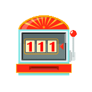

一番くじ期待値計算
一番くじのラインナップを見る（公式サイト）
期待値から逆算したい方はこちら

残りくじ総数:
当たり枚数:
購入数:
購入数+5
購入数+10
購入数リセット
計算する
1枚以上当たる確率：
0
%
残りくじ総数 :
0
あたり枚数 :
0
購入数 :
0
n枚当たる確率
小数点以下表示桁数：
1桁
2桁
3桁
4桁
5桁
6桁
7桁
8桁
9桁
10桁
当たり枚数 (n)
確率